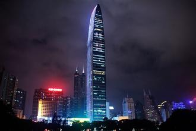
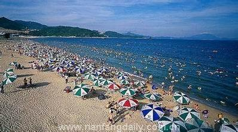

中国城市竞争力报告出炉 深圳首超香港排名第一.5月15日讯 由中国社会科学院财经战略研究院、中国城市百人论坛、社会科学文献出版社及中国社会科学院城市与竞争力研究中心共同举办的《城市竞争力蓝皮书：中国城市竞争力报告No.13》发布会在京举行。


蓝皮书数据显示，2014年综合经济竞争力指数排名前十的城市依次是：深圳、香港、上海、台北、广州、天津、苏州、北京、澳门、无锡，这些城市主要集中在珠三角、长三角、环渤海和港澳台地区，广大中西部地区无一城市进入综合经济竞争力十强之列。
在综合经济竞争力方面，香港高居第二位，首次被深圳超越。综合竞争力分项表现稍有差异：从综合增量竞争力分项指数来看，香港整体很好，但“守成有余，创新不足”的城市发展局面始终没有改变，香港过于看重贸易、金融、航运、旅游、专业服务这五大产业，而对不少规模较小、新兴但极有潜力的产业关注不足，从长远看缺乏新型产业业态的支撑和引领。

在当前中国城市综合竞争力排名中，深圳超越香港，位居首位。而在中国城市人均存款余额的排名中，香港、深圳、北京列前三。